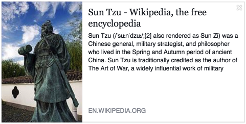
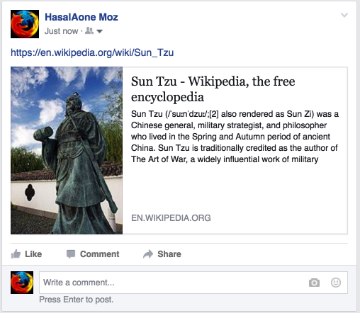
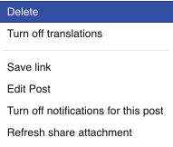
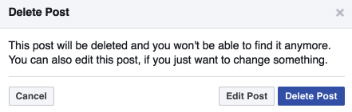
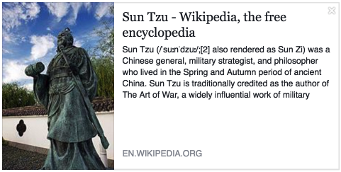
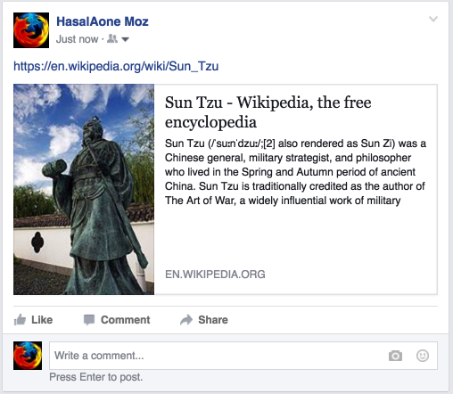
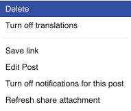
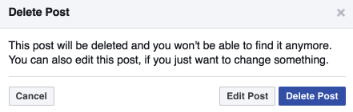

from sikuli import *
import sys
import common
class facebook():
def __init__(self):
self.common = common.General()
if sys.platform == 'darwin':
self.control = Key.CMD
else:
self.control = Key.CTRL
self.alt = Key.ALT
def wait_for_loaded(self):
default_timeout = getAutoWaitTimeout()
setAutoWaitTimeout(10)
wait(Pattern().similar(0.85), 10)
setAutoWaitTimeout(default_timeout)
self.focus_window()
def focus_window(self):
default_timeout = getAutoWaitTimeout()
setAutoWaitTimeout(10)
click(Pattern().similar(0.85).targetOffset(0,15))
setAutoWaitTimeout(default_timeout)
def post_url(self):
click(Pattern( ).similar(0.85))
paste('https://en.wikipedia.org/wiki/Sun_Tzu ')
wait(, 10)
click(Pattern().similar(0.85))
wait(Pattern().similar(0.85), 10)
print('[Facebook] post_url() done.')
def post_url_del(self):
wait(Pattern().similar(0.85), 10)
click(Pattern().similar(0.85).targetOffset(230,-200))
wait(Pattern().similar(0.85), 10)
click(Pattern().similar(0.85).targetOffset(-70,-70))
wait(Pattern().similar(0.85), 10)
click(Pattern().similar(0.85).targetOffset(160,50))
waitVanish(Pattern().similar(0.85), 10)
waitVanish(Pattern().similar(0.85), 10)
print('[Facebook] post_url_del() done.')
my_fb = facebook()
my_fb.wait_for_loaded()
# Post URL
my_fb.post_url()
# Delete posted URL after testing
my_fb.post_url_del()
).similar(0.85))
paste('https://en.wikipedia.org/wiki/Sun_Tzu ')
wait(, 10)
click(Pattern().similar(0.85))
wait(Pattern().similar(0.85), 10)
print('[Facebook] post_url() done.')
def post_url_del(self):
wait(Pattern().similar(0.85), 10)
click(Pattern().similar(0.85).targetOffset(230,-200))
wait(Pattern().similar(0.85), 10)
click(Pattern().similar(0.85).targetOffset(-70,-70))
wait(Pattern().similar(0.85), 10)
click(Pattern().similar(0.85).targetOffset(160,50))
waitVanish(Pattern().similar(0.85), 10)
waitVanish(Pattern().similar(0.85), 10)
print('[Facebook] post_url_del() done.')
my_fb = facebook()
my_fb.wait_for_loaded()
# Post URL
my_fb.post_url()
# Delete posted URL after testing
my_fb.post_url_del()